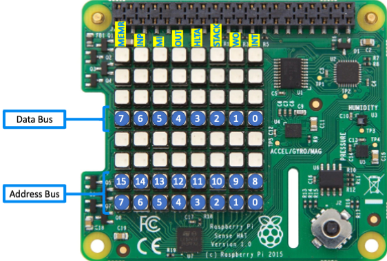
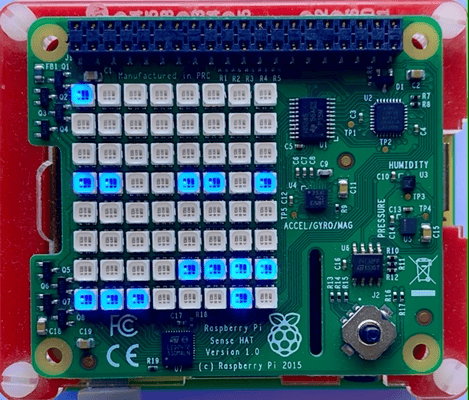

Deploying the Altair 8800 Emulator with Docker¶
This guide explains how to start and configure the Altair 8800 emulator using Docker. The Altair emulator is a software recreation of the classic Altair 8800 computer, supporting CP/M and other retro environments. You can run it on Linux, macOS, Windows, and Raspberry Pi.
Below you'll find instructions for standard and advanced deployment modes, environment variable configuration, persistent disk storage, and useful Docker commands.
Altair 8800 Standard Mode¶
This option is recommended for most users and works on 64-bit (recommended) and 32-bit versions of Linux, macOS, Windows, and Raspberry Pi. The container always serves the browser terminal: it serves the web UI over HTTP and bridges it to the emulator over a WebSocket, so you run it detached and connect from a browser.
docker run -d -p 8800:8080 --name altair8800 --restart unless-stopped glovebox/altair8800v2:latest
Then open http://localhost:8800/ in a browser. The emulator waits to boot until the first browser connects, then streams the CP/M banner to the page.
Ports
The container exposes a single port, 8080, which serves both the Web Terminal UI and the WebSocket bridge. Publish it to any host port with -p HOST:8080 (the examples use 8800). Select a different in-container port with ALTAIR_WEB_PORT and publish the matching -p.
Altair 8800 Advanced Modes¶
You can enable advanced features through environment variables and mounted files. These options can be combined as needed:
- Set the time zone.
- Integrate with OpenAI (or any OpenAI-compatible) Chat Completions endpoint.
- Connect to the OpenWeatherMap service for current weather data.
- Run on a Raspberry Pi with a Pi Sense HAT to display address and data bus info on the 8x8 LED panel.
Configuration comes from two places:
- Docker
-eenvironment variables — passed on thedocker runcommand line. These control the container and runtime (time zone, Sense HAT, web port, disk selection). - The
altair_env.txtenvironment store — a text file mounted into the container. This holds the emulator's own key/value store (API keys, weather settings, chat settings, and any variables your CP/M programs read through theENVutility).
Docker -e Environment Variables¶
| Variable | Description |
|---|---|
TZ |
Time zone for the emulated clock (see Time Zone below). |
ALTAIR_SENSE_HAT |
Set to 1 to drive a Raspberry Pi Sense HAT front panel (see Pi Sense HAT). |
ALTAIR_SENSE_HAT_I2C |
Override the Sense HAT sensor I2C bus number (default 1). Useful on the Raspberry Pi 5. |
ALTAIR_SENSE_HAT_FB |
Force a specific Sense HAT LED framebuffer (/dev/fbN or just N); otherwise auto-detected. |
ALTAIR_WEB_PORT |
In-container port for the browser terminal (default 8080). Publish the matching -p. |
ALTAIR_DRIVE_A … D |
Disk image filename for each drive, relative to the disks directory. |
ALTAIR_DRIVE_A_PATH … D_PATH |
Full path override for each drive (takes precedence over the filename form). |
ALTAIR_DISKS_DIR |
Directory that holds the disk images (default /opt/altair/disks). |
ALTAIR_APPS_ROOT |
Apps folder used by the FT file-transfer lookups (default /opt/altair/Apps). |
ALTAIR_ENV_FILE |
Path to the altair_env.txt store (default /opt/altair/runtime/altair_env.txt). |
ALTAIR_WEB_ROOT |
Location of the bundled terminal UI (default /opt/altair); rarely needs changing. |
The altair_env.txt Environment Store¶
The emulator keeps a small key/value store that CP/M programs read and write through the ENV utility, and that the weather and chat drivers read for their configuration. It is a plain KEY=VALUE text file, one entry per line.
This file is not baked into the image
Because it can hold secrets such as API keys, altair_env.txt is not included in the published image. Mount it at runtime with -v. When it is absent, the emulator simply starts with an empty store.
Mount your file over /opt/altair/runtime/altair_env.txt:
docker run -d -p 8800:8080 --name altair8800 \
-v "$PWD/altair_env.txt:/opt/altair/runtime/altair_env.txt" \
--restart unless-stopped \
glovebox/altair8800v2:latest
Recognised altair_env.txt keys¶
| Key | Description |
|---|---|
OWM_KEY |
OpenWeatherMap API key (get a free key at OpenWeatherMap). |
OWM_LOCATION |
Weather location, e.g. Sydney,AU. |
OWM_UNITS |
Units: metric, imperial, or standard. |
CHAT_OPENAI_KEY |
Bearer token for OpenAI or any compatible endpoint that requires auth. |
CHAT_PROVIDER |
openai (default) or compatible. |
CHAT_ENDPOINT |
Full chat-completions URL, used when CHAT_PROVIDER=compatible (e.g. a local Ollama/LM Studio server). |
CHAT_MODEL |
Model name, e.g. gpt-4o-mini or gemma3:1b. |
CHAT_MAX_TOKENS |
Maximum response tokens, e.g. 4096. |
CHAT_TEMPERATURE |
Sampling temperature, e.g. 0.7. |
Any other KEY=VALUE lines (for example NAME=dave) are available to your CP/M programs through the ENV utility.
Example altair_env.txt:
OWM_KEY=your-openweathermap-key
OWM_LOCATION=Sydney,AU
OWM_UNITS=metric
CHAT_OPENAI_KEY=your-openai-or-compatible-key
CHAT_PROVIDER=compatible
CHAT_ENDPOINT=http://192.168.1.127:11434/v1/chat/completions
CHAT_MODEL=gemma3:1b
CHAT_MAX_TOKENS=4096
CHAT_TEMPERATURE=0.7
Time Zone¶
Set the time zone with the TZ Docker environment variable so the emulated clock reports local time.
For a fixed UTC offset, use a POSIX TZ string. POSIX inverts the sign, so UTC+10 is written UTC-10:
docker run -d -p 8800:8080 --name altair8800 -e TZ=UTC-10 \
--restart unless-stopped glovebox/altair8800v2:latest
TZ=UTC-10 is a fixed offset with no daylight saving. The published image is built on Alpine/musl and does not bundle the IANA time-zone database, so named zones like Australia/Sydney (which would apply DST automatically) are not available out of the box.
OpenWeatherMap¶
Set OWM_KEY, OWM_LOCATION, and OWM_UNITS in altair_env.txt to fetch current weather. Get a free API key at OpenWeatherMap.
OpenAI / Compatible Chat¶
Set CHAT_OPENAI_KEY in altair_env.txt to enable the chat port.
- For OpenAI, leave
CHAT_PROVIDER=openai(the default); requests go tohttps://api.openai.com/v1/chat/completions. - For a local or self-hosted server (Ollama, LM Studio, etc.), set
CHAT_PROVIDER=compatibleandCHAT_ENDPOINTto the full URL, e.g.http://192.168.1.127:11434/v1/chat/completions. If the Altair runs in a container, use the server's LAN IP address—notlocalhost, which refers to the container itself.
Raspberry Pi with Pi Sense HAT¶
You can run the Altair emulator on a Raspberry Pi with a Pi Sense HAT attached. The Sense HAT's 8x8 LED panel displays the Altair address and data bus information, and CP/M programs can switch it between bus, font, and bitmap display modes and read the onboard temperature, pressure, and humidity sensors.
| Raspberry Pi with Pi Sense HAT | Raspberry Pi Sense HAT |
|---|---|
 |
 |
{kind=link}
{kind=link}
Enable I2C hardware access¶
The Sense HAT sensors are on the I2C bus, so enable I2C on the Raspberry Pi first:
sudo raspi-config nonint do_i2c 0
Start the container with the Sense HAT enabled¶
Set ALTAIR_SENSE_HAT=1 to signal the presence of the Pi Sense HAT, and grant the container access to the hardware with --privileged --device=/dev/i2c-1:
docker run -d --privileged --device=/dev/i2c-1 \
-e ALTAIR_SENSE_HAT=1 \
-e TZ=UTC-10 \
-p 8800:8080 --name altair8800 \
-v "$PWD/altair_env.txt:/opt/altair/runtime/altair_env.txt" \
--restart unless-stopped \
glovebox/altair8800v2:latest
The LED panel lights up as soon as the framebuffer is found—even if the sensors are unavailable. Check the startup diagnostics with:
docker logs altair8800 2>&1 | grep -i sense-hat
Raspberry Pi 5
The Pi 5's RP1 I/O controller can change the device numbering. The LED framebuffer is auto-detected across /dev/fb0–/dev/fb31, but if the sensor I2C bus differs, find it with ls /dev/i2c-* and i2cdetect -y <bus> (look for 0x5c and 0x5f), then pass --device=/dev/i2c-N -e ALTAIR_SENSE_HAT_I2C=N. If the LED panel is not found, force it with -e ALTAIR_SENSE_HAT_FB=N.
Altair Disk Storage¶
Altair emulator disks live in the container's disks directory (/opt/altair/disks). Bind-mount a host folder there so any changes made to the disks are saved when the container is stopped or deleted:
docker run -d -p 8800:8080 --name altair8800 \
-v "$PWD/altair_env.txt:/opt/altair/runtime/altair_env.txt" \
-v "$PWD/disks:/opt/altair/disks" \
--restart unless-stopped \
glovebox/altair8800v2:latest
You can also use a named Docker volume instead of a host folder:
docker run -d -p 8800:8080 --name altair8800 \
-v altair-disks:/opt/altair/disks \
--restart unless-stopped \
glovebox/altair8800v2:latest
Override an individual drive's disk image without changing the others with ALTAIR_DRIVE_A … ALTAIR_DRIVE_D:
docker run -d -p 8800:8080 --name altair8800 \
-v "$PWD/disks:/opt/altair/disks" \
-e ALTAIR_DRIVE_B=my-workbench.dsk \
--restart unless-stopped \
glovebox/altair8800v2:latest
Open the Web Terminal¶
To access the Altair emulator, open the Web Terminal:
- Familiarize yourself with the Web Terminal and the CP/M operating system.
-
Open your web browser:
- If running locally, go to
http://localhost:8800. - If running remotely, go to
http://<hostname_or_ip_address>:8800.
- If running locally, go to
{kind=link}
Connecting to a Remote Altair Emulator¶
To connect your local Web Terminal to a remote Altair emulator, add the altair query parameter to the URL. For example, if the remote Altair emulator is running at 192.168.1.100, open your browser and go to http://localhost?altair=192.168.1.100. This requires the Web Terminal to be running on your local machine, either in a separate Docker container or installed locally.
Note: The Web Terminal must be running locally (either in a separate Docker container or installed on your machine) to connect to a remote Altair emulator using the altair query parameter.
Docker Tips and Tricks¶
Manage the Altair Emulator Docker Container¶
Stop the container:
Stops the running Altair emulator container:
docker stop altair8800
Restart the container:
Restarts a previously stopped Altair emulator container:
docker start altair8800
Delete the container:
Removes the Altair emulator container after stopping it:
docker rm altair8800
Manage Persistent Storage Volume¶
Inspect the volume:
docker volume inspect altair-disks
Check data in the volume:
sudo ls -al /var/lib/docker/volumes/altair-disks/_data
Remove the volume:
docker volume rm altair-disks